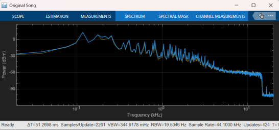
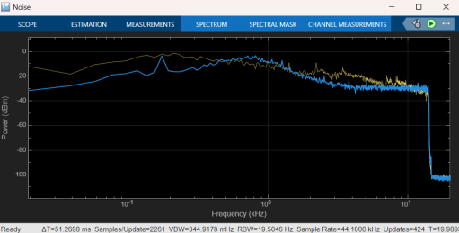
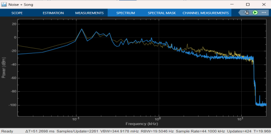
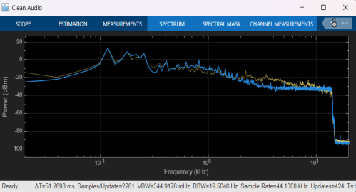

SIGNAL PROCESSING • MATLAB • SIMULINK
Adaptive Noise Cancellation Using LMS Filtering
Adaptive filtering technique for reducing unwanted noise from a desired signal
Simulink Model


Overall MATLAB/Simulink model implementing adaptive noise cancellation using the LMS filtering technique.
Simulation Results
The simulation results show the frequency spectrum of the original signal, noise, combined noisy signal and the resulting clean signal after adaptive filtering.

Original Signal

Noise

Noise + Signal

Clean Signal After LMS Filtering
About the Project
This project implements Adaptive Noise Cancellation using the Least Mean Square (LMS) filtering technique in MATLAB/Simulink. The adaptive filter continuously adjusts its coefficients to reduce unwanted noise from the desired signal.
Working Principle
The system uses a reference noise signal and an adaptive filter. The LMS algorithm continuously updates the filter coefficients based on the error between the desired signal and the estimated noise.
System Flow
LMS Algorithm
The Least Mean Square algorithm adapts the filter coefficients using the instantaneous error signal. The filter continuously learns the characteristics of the unwanted noise and improves the cancellation process.
LMS weight update:
w(n+1) = w(n) + μ e(n)x(n)Tools Used
Key Features
- Adaptive noise cancellation using LMS filtering
- Continuous filter coefficient adaptation
- Reference noise based estimation
- Error signal based optimization
- MATLAB/Simulink based implementation
My Contribution
Implemented and simulated the adaptive noise cancellation system using the LMS filtering technique in MATLAB/Simulink and analysed the resulting signal after noise reduction.